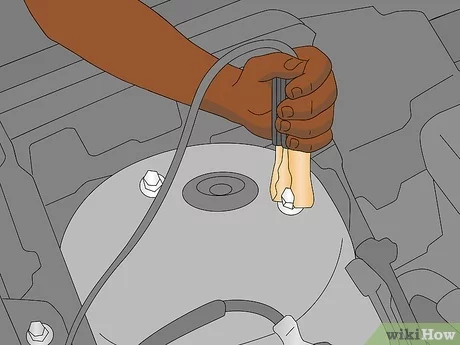

How To Jump Start A Car
Home
Question 1
Question 2
What should you connect the black (negative) jumper cable to on the car with the dead battery?
Click on one of the following choices
Battery
Hood
Engine
Positive
